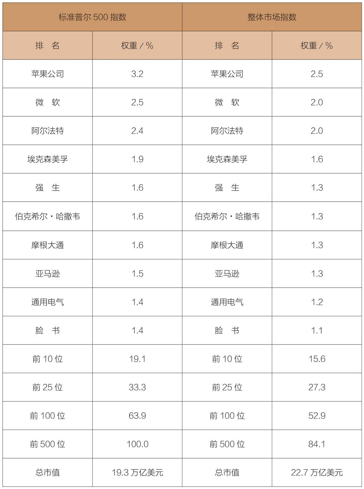
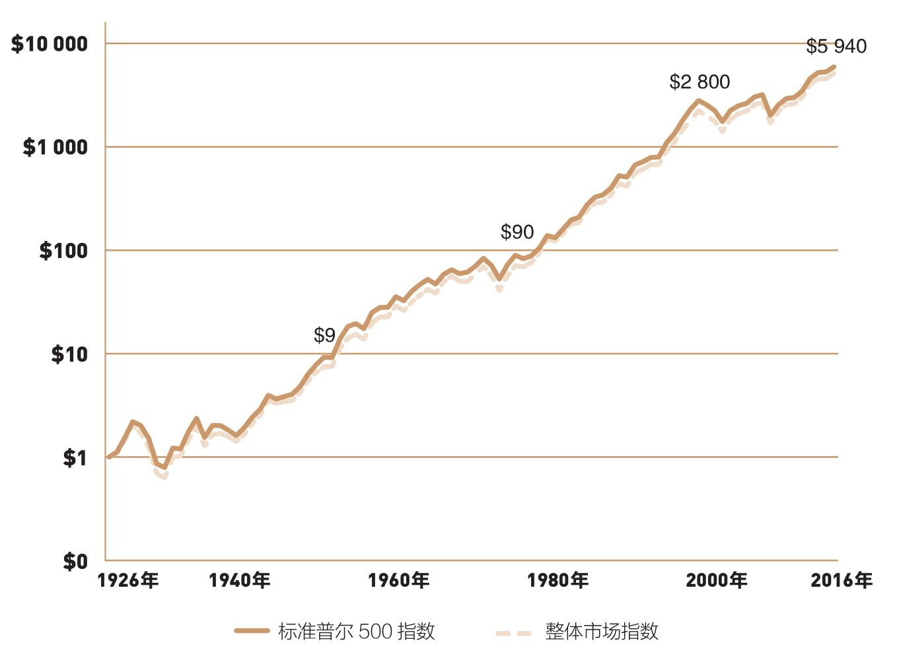
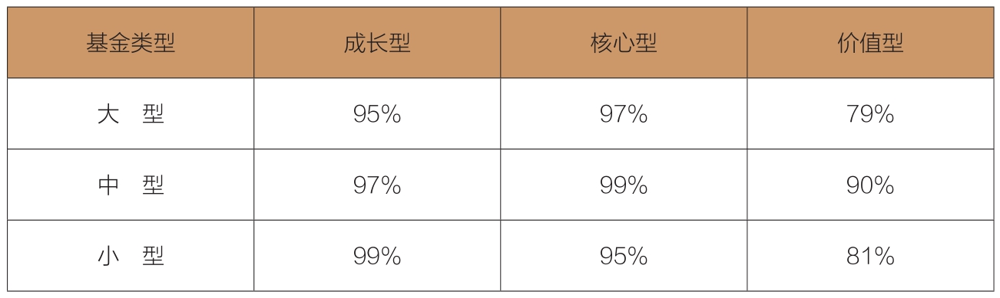

晚宴上，一位贵宾现身说法，他最初15 000元的投资，现在价值已高达913 340元。他的秘诀在哪里？
SPIVA把最长研究周期扩展到15年（2001—2016年），其间90%的主动型共同基金表现不及它们的基准指数。你怎么选？
如何与经济基本面共舞呢？只需要你购买所有美国企业股票构成的投资组合，然后永久持有。这个简单的操作能保证你赢得多数投资者参与的投资游戏。要知道，就整体而言，投资者在这个游戏中处于输家的地位。
千万要注意，不要把简单和愚蠢等同起来。实际上，早在1320年，奥卡姆的威廉（William of Occam，14世纪逻辑学家）就已经阐述了这个概念：当有多个解决问题的答案时，一定要选择最简单的那个（“如无必要，勿增实体”）。正因如此，“奥卡姆剃刀”原理才成为科学研究的一个重要原则。因此，想要拥有所有美国企业，最简单的办法，就是持有一个整体股票市场的投资组合，或者与之对等的组合。
在过去90年里，一般公认的美国股票市场投资组合，正是以标准普尔500指数为代表。该指数创建于1926年，目前包括500只股票(1)。从本质上看，它包含了美国最大的500家公司，并以各公司股票的市值为权重，采用加权平均法计算。到目前为止，这500家公司的股票市值已经达到所有美国股票市值的85%左右。这种市值权重型指数的优点是它的净值不需要通过买卖股票来调整，而可以根据股票价格的变动自动调整。
1950—1990年，企业养老金大幅增长。作为一个极具可比性的量度指标，标准普尔500指数成为衡量基金经理经营业绩的理想标准，乃至股票市场的基准收益率。今天，标准普尔500指数依然是考核养老金基金和共同基金管理人经营业绩的参考标准。
1970年，一个涵盖范围更广的美国股票指数出现了。起初，它被称为威尔逊5000指数（Wilshire 5000），也就是现在的道琼斯·威尔逊整体市场指数（Dow Jones Wilshire Total Market Index）。它容纳了3 599只股票，其中包括标准普尔500指数中的500只股票。但是，由于其成分股也是按股票市值进行加权平均的，因此，其余3 099只股票仅占其价值的15%左右。
作为涵盖范围最广的美国股票指数，它是衡量股票总体价值的最佳指标，也是评判全体投资者美国股票投资收益情况的权威标准。正如前文所说，这两个指数持有的大型股类似。表3-1说明了两个指数中权重最大的10只股票及其在各自指数中所占的比例。
考虑到组合结构上的相似性，这两个指数收益水平的相近也就不足为奇了。芝加哥大学证券价格研究中心（The Center of Research in Security Prices）计算了1926年以来所有美国股票的收益，其结果几乎与整体市场指数完全吻合。研究结果显示，这两个指数的收益率几近一致。从1926年开始统计到2016年，很难看出两者之间的差异（见图3-1）。
表3-1 标准普尔500指数与整体市场指数构成的比较，2016年12月


图3-1 标准普尔500指数与整体市场指数
在整个研究期内，标准普尔500指数的年均收益率为10.0%；而整体市场指数的年均收益率则是9.8%。这也就是我们所说的“区间依赖型”（period depends）结果，也就是说，评价结果取决于起始日期和终止日期。假如我们从1930年，而不是1926年开始进行比较，两者的收益率将完全相同，年均收益率均为9.6%。
可是，它们在比较期内仍存在不同程度的偏离：1982—1990年，标准普尔500指数的表现显然更为优异，其年均收益率达到15.6%，而同期的整体市场指数年均收益率只有14.0%。但是在最近几年，小盘股和中盘股的市场表现更为抢眼，因此，整体市场指数年均收益率为10.2%，明显胜过标准普尔500指数的9.9%。不过，考虑到两个指数收益能力间高达0.99的相关系数（完全相关为1.0），这也就没什么值得挑剔的地方了。
不管采用何种衡量指标，我们都应该认识到，对构成这个股票市场的所有上市公司而言，股票市场的总收益必然等于所有投资者获得的收益之和(2)。同样显而易见的是，由于中间成本的存在，投资者所能实现的净收益必然小于股票市场的总收益，我们将在第4章探讨这个问题。常识告诉我们，这绝对是再浅显不过的事实了。正如我们在第1章里看到的，只要长期拥有股票市场，就会成为赢家，而试图击败市场的，则会成为输家。
对于这样一个低成本，且涵盖整个市场的基金，其长期收益率注定要高于股票投资者的整体收益率。一旦认识到这一事实，我们就会发现，指数基金的优势体现在长期，而且表现在每一年、每一月和每一周，甚至是每一天的每一分钟。不管这个时间框架有多长，股票市场的总收益减去中间成本，必然要等于全体投资者所能得到的净收益。如果数据不能证明指数化投资是赢家，那么这些数据肯定有问题。
但是就短期而言，标准普尔500指数或整体市场指数却并不总是赢家。其原因在于，在美国股票市场上活跃着几百万股民，他们当中既有业余投资者，也有专业投资者；既有国内投资者，也有国外投资者。我们根本就不可能以同样的方式去计算他们的收益。
在共同基金领域，一般是用各种基金的平均收益作为共同基金的最终收益，也就是说，以每只基金为单位来计算平均收益，而不是以每只基金的资产规模为权重来计算加权收益。市场上存在大量的小盘基金和中盘基金，它们的资产规模相对较小，对最终数据的影响也不成比例。当中小盘基金的表现相对优于整体市场时，大盘（all-market）指数基金的业绩似乎就会落后；而当中小盘基金业绩低于整体市场时，指数基金就会显现出无比的威力。
对比各类主动型共同基金和标准普尔500指数是一个难题，而有效的办法是对比这只基金和能够体现其投资策略的某一指数。数年前，《标准普尔指数与主动型共同基金报告》 （S&P Indices versus Active Report，SPIVA）就开始提供这方面的信息。这份报告提供了依据不同策略分组的主动型共同基金与相关市场指数对比的综合数据。在2016年年终报告中，SPIVA把最长研究周期扩展到15年（2001—2016年），并给出了主动型共同基金被相关基准指数超过的比例。结果令人印象深刻（见表3-2）。总体而言，在先前15年里， 90%的主动型共同基金的表现不及它们的基准指数。由此可见，指数的优势持续而稳定。
表3-2 标准普尔500指数胜过主动型共同基金的比例，2001—2016年

标准普尔500指数的表现优于97%的主动型大盘核心股基金。除了标准普尔500指数以外，其他用来比较的指数还包括标准普尔500成长型和价值型指数。采用这三种基准指数的基金，又可以根据规模分为大型、中型和小型。表3-2显示出指数的绝对优势，因此，指数基金的蓬勃发展也就顺理成章。
1951年，我在普林斯顿大学完成的毕业论文中曾经提到，共同基金“不能宣称优于大盘指数”。66年过去了，这句话被证明是一个相当保守的陈述。
1976年8月31日，世界上第一只指数基金——先锋500指数基金（Vanguard 500 Index Fund）开始运营。近年来，这只基金的表现不仅没有减弱，反而更加优异。让我们用更具体的例子来说明：2016年9月20日，在庆祝基金上市40周年的晚宴上，有一位曾经担任基金承销人的顾问。当时，他按每股15美元的价格买了1 000股，投资总金额15 000美元。在宴会上，他不无骄傲地告诉大家，到目前为止，这笔投资的价值（包括基金持股的股利再投资，以及这些原始基金分派的额外股份）已经达到了913 340美元。我想，这个数字已不需要我们再多说什么。但我们有必要提出一项警告，以及一项值得留意的地方(3)。
警告：1976年先锋基金诞生时，市场上共有360家主动型共同基金，目前仅存74家。主动型共同基金出现又消失，而指数基金却一直存在。
提示：过去40年，标准普尔500指数以年均10.9%的速度增长。当下，面对较低的股利收益、较低的收益增速预期和较高的市场估值，如果有人假设这样的收益率会在今后40年里持续下去，那么他就太不聪明了。详细内容见第9章。
这个长期的优秀业绩可以证明：通过最具多样性的指数基金拥有美国企业，在逻辑上是合理的，收益率是最好的证明。同样不可忘记的依然是“奥卡姆剃刀”那个颠扑不破的真理：不要一窝蜂地和别人凑热闹，投资者似乎总喜欢不辞劳苦地去挑选股票，希望找到能给自己带来意外之喜的市场宠儿，或是试图抢先一步，未卜先知，猜测股票市场的前景（总之，这也是绝大多数投资者最喜欢做，但是最徒劳的两件事情）。事实上，我们只需要所有方案中最简单的一个——买入并持有一个低成本、追踪整体股票市场的组合。
不妨听听倍受尊敬的耶鲁大学捐赠基金首席投资总监大卫·史文森（David Swensen）的说法：“在所有基金中，只有区区4%的基金能够超越市场，而这4%的基金也只能获得0.6%（年化）的税后超额收益。其余96%的基金都无法达到先锋500指数基金的收益能力，更不用说超越了。而它们破坏财富的能力却不可小视，亏损率居然高达每年4.8%。”
很多由大公司、州政府或联邦政府管理的养老金基金，都以最简单的指数基金作为基本投资策略。而指数基金更是它们中规模最大的退休计划——联邦政府雇员的退休计划（Federal Thrift Saving Plan, TSP）——的主导投资策略。这个服务于已退休政府公务员，以及军人的养老金计划一直非常成功，目前持有的资产市值大约在4 600亿美元。在实际提取之前，该计划的所有捐赠和收益均采取递延纳税的方法，这一点非常接近于401（k）条款规定的企业养老金计划。
即使是在大西洋彼岸，指数投资也倍受好评。伦敦《投机家》（The Spectator）专栏作家乔纳森·戴维斯（Jonathan Davis）就指出：“在英国的金融服务业中，始终没有人能效仿约翰·博格的指数基金在美国所取得的辉煌业绩。英国金融行业竟然无法提供类似的产品。这个行业里，所有专业人士都知道，无论什么样的投资者，指数基金都应该是他们构建长期投资组合的基石。1976年以来，先锋指数基金的年复利收益率已经达到了12%，胜过了75%的基金。尽管冷漠忽视以及业内人士的诋毁伴随它走过了30年，但是，正是这位投资界的无名英雄，让众多投资者享受着投资给他们带来的丰硕果实。”
(1)标准普尔500指数最初只包括90家公司，1957年增加到500家。
(2)未扣除费用。
(3)这位投资者分别支付了股利税和资本利得税。